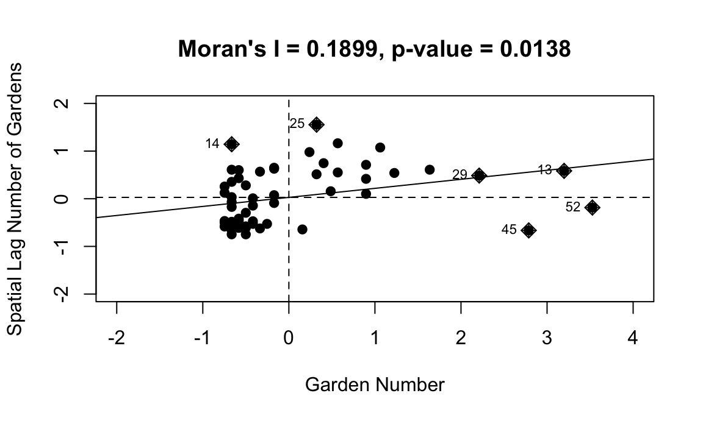

analysis_data_final <-
read_csv("./data/final_unique_boards.csv") %>%
select(id_spatial, community_board, obesity, hypertension, life_expectancy, self_rep_health, poverty, avg_rev_value, avg_tot_appropriated, borough, garden_num) %>%
filter(!id_spatial %in% c('414'))
working <- getwd()
com_board_spdf <- readOGR(dsn = working, layer = "community_board_new", verbose = FALSE)
com_board_spdf2 <- com_board_spdf[!com_board_spdf@data$boro_cd %in% c("414"), ]
invisible(names(com_board_spdf))
analysis_data_spatial <- merge(com_board_spdf2, analysis_data_final, by.x = "boro_cd", by.y = "id_spatial")We hypothesized that the community gardens in NYC would not be evenly distributed spatially, indicating that the number of gardens in a specific community board is dependent on where in NYC you are looking geographically
Moran’s I
A correlation coefficient that measures the overall spatial auto-correlation among nearby locations in space. It measures how similar an values of a spatial object are to the values of other spatial objects surrounding it. In this way Moran’s I helps identify whether variables are clustered in space in a non-random way.
Moran’s I Interpretation
Process
spdep packageWe found that Moran’s I = 0.1899 (p=0.0138). This confirmed our hypothesis that community gardens in NYC are not evenly distributed spatially.
analysis_data_final <-
read_csv("./data/final_unique_boards.csv") %>%
select(id_spatial, community_board, obesity, hypertension, life_expectancy, self_rep_health, poverty, avg_rev_value, avg_tot_appropriated, borough, garden_num) %>%
filter(!id_spatial %in% c('414'))
working <- getwd()
com_board_spdf <- readOGR(dsn = working, layer = "community_board_new", verbose = FALSE)
com_board_spdf2 <- com_board_spdf[!com_board_spdf@data$boro_cd %in% c("414"), ]
invisible(names(com_board_spdf))
analysis_data_spatial <- merge(com_board_spdf2, analysis_data_final, by.x = "boro_cd", by.y = "id_spatial")
# Create a queen's neighborhood weight matrix using poly2nb
analysis_nbq <- poly2nb(analysis_data_spatial)
# extract coordinates to plot the connectivity matrix for visualization.
#coords <- coordinates(analysis_data_spatial)
# convert neighborhood matrix into a list so connections between counties can be used in Moran's I test.
analysis_nbq_w <- nb2listw(analysis_nbq)
# Garden number
# Convert Exposure variable to z-form and then create the lag of that variable.
analysis_data_spatial@data$garden_num <- scale(analysis_data_spatial@data$garden_num)
analysis_data_spatial@data$lag_sQL <- lag.listw(analysis_nbq_w,analysis_data_spatial@data$garden_num)
# Lose spatial properties when we turn into data frame for analysis
#analysis_sp_data <- as.data.frame(analysis_data_spatial)
# Run morans I test and plot the results.
garden_moran <- moran.test(analysis_data_spatial@data$garden_num, listw = analysis_nbq_w, zero.policy = TRUE)
moran.plot(as.vector(analysis_data_spatial@data$garden_num), listw = analysis_nbq_w,
xlim = c(-2,4),ylim = c(-2,2),
main = "Moran's I = 0.1899, p-value = 0.0138",
xlab = "Garden Number", ylab = "Spatial Lag Number of Gardens", pch = 19)
We explored both of these questions using linear regression modeling.
Poverty - percent living below 100% of NYC’s calculated poverty threshold based on income and necessary expenses
We hypothesized that a greater number of gardens in a community district would be associated with a decrease in the percentage of adults with hypertension and obesity, and an increase in life expectancy and the percentage of adults reporting good health, adjusting for percent poverty.
We fit general linear regression models for each outcome (obesity, hypertension, life expectancy, self-reported health) and ran Lagrange Multiplier tests on these to identify the appropriate type of spatial regression model to use. See report for more details on the diagnostic process.
###fit baseline linear models.
obesity_lm <- lm(obesity ~ garden_num + poverty, data = analysis_data_spatial)
hypertension_lm <- lm(hypertension ~ garden_num + poverty, data = analysis_data_spatial)
life_expectancy_lm <- lm(life_expectancy ~ garden_num + poverty, data = analysis_data_spatial)
self_rep_health_lm <- lm(self_rep_health ~ garden_num + poverty, data = analysis_data_spatial)
obesity_lagrange <- lm.LMtests(obesity_lm, analysis_nbq_w, test = c("LMerr","RLMerr","LMlag","RLMlag","SARMA"))
hypertension_lagrange <- lm.LMtests(hypertension_lm, analysis_nbq_w, test = c("LMerr","RLMerr","LMlag","RLMlag","SARMA"))
life_expectancy_lagrange <- lm.LMtests(life_expectancy_lm,analysis_nbq_w, test = c("LMerr","RLMerr","LMlag","RLMlag","SARMA"))
self_rep_lagrange <- lm.LMtests(self_rep_health_lm, analysis_nbq_w, test = c("LMerr","RLMerr","LMlag","RLMlag","SARMA"))
lagrange_df <-
tibble(
model_outcome = c("Obesity", "Hypertension", "Life Expectancy", "Self Reported Health"),
LMerror_pvalue = c(0.0000145, 0.0002054, 0.000027, 0.6988),
robust_LMerror_pvalue = c(0.3705, 0.3374, 0.6854, 0.6328),
LMlag_pvalue = c(0.0000000046, 0.0000019, 0.00000075, 0.9243),
robust_LMlag_pvalue = c(0.000067, 0.001757, 0.008062, 0.7673)
)
lagrange_df %>%
knitr::kable(booktabs = TRUE, align = 'c') %>%
kable_styling() %>%
row_spec(1:3, color = "black", background = "#ceebcc", bold = TRUE) | model_outcome | LMerror_pvalue | robust_LMerror_pvalue | LMlag_pvalue | robust_LMlag_pvalue |
|---|---|---|---|---|
| Obesity | 0.0000145 | 0.3705 | 0.0000000 | 0.000067 |
| Hypertension | 0.0002054 | 0.3374 | 0.0000019 | 0.001757 |
| Life Expectancy | 0.0000270 | 0.6854 | 0.0000008 | 0.008062 |
| Self Reported Health | 0.6988000 | 0.6328 | 0.9243000 | 0.767300 |
Notes: The Lagrange multiplier lag was significant for the models for obesity, hypertension and life-expectancy. None of the Lagrange multipliers were significant for self-reported health.
Based on the linear regression assumptions and the spatial diagnostic tests, we concluded that we need to run spatial lag linear regression models for obesity, hypertension, and life-expectancy and a regular multivariable linear regression model for self-reported health (since none of the Lagrange tests were significant we deduced that there was no need for spatial parameter adjustment).
###Specify Spatial Lag Model for obesity
obesity_lag <- lagsarlm(obesity ~ garden_num + poverty, data = analysis_data_spatial, analysis_nbq_w, tol.solve = 1.0e-15)
obesity_lag_df <-
obesity_lag %>%
broom::tidy()
###Specify Spatial Lag Model for hypertension
hypertension_lag <- lagsarlm(hypertension ~ garden_num + poverty, data = analysis_data_spatial, analysis_nbq_w, tol.solve = 1.0e-15)
hypertension_lag_df <-
hypertension_lag %>%
broom::tidy()
###Specify Spatial Lag Model for life expectancy
life_expect_lag <- lagsarlm(life_expectancy ~ garden_num + poverty, data = analysis_data_spatial, analysis_nbq_w, tol.solve = 1.0e-15)
life_expect_lag_df <-
life_expect_lag %>%
broom::tidy()
###Specify regular linear regression model for self-reported health
self_rep_lm <- lm(self_rep_health ~ garden_num + poverty, data = analysis_data_spatial)
self_rep_lm_df <-
self_rep_lm %>%
broom::tidy()
rbind(life_expect_lag_df, obesity_lag_df, hypertension_lag_df, self_rep_lm_df) %>%
knitr::kable() %>%
kable_styling() %>%
pack_rows(index = c("Obesity" = 4, "Hypertension" = 4, "Life Expectancy" = 4, "Self Reported Health" = 3)) %>%
row_spec(3, color = "black", background = "#ceebcc") %>%
row_spec(7, color = "black", background = "#ceebcc") %>%
row_spec(11, color = "black", background = "#EBE4CC", bold = TRUE) %>%
row_spec(14, color = "black", background = "#ceebcc") | term | estimate | std.error | statistic | p.value |
|---|---|---|---|---|
| Obesity | ||||
| rho | 0.4921277 | 0.0965190 | 5.0987675 | 0.0000003 |
| (Intercept) | 43.4508221 | 8.0771479 | 5.3794759 | 0.0000001 |
| garden_num | -1.1920316 | 0.2149444 | -5.5457664 | 0.0000000 |
| poverty | -0.0965110 | 0.0325297 | -2.9668618 | 0.0030086 |
| Hypertension | ||||
| rho | 0.6879445 | 0.0715935 | 9.6090303 | 0.0000000 |
| (Intercept) | -0.2114400 | 2.0410727 | -0.1035926 | 0.9174927 |
| garden_num | 1.2544384 | 0.5856560 | 2.1419372 | 0.0321985 |
| poverty | 0.3791848 | 0.0960894 | 3.9461667 | 0.0000794 |
| Life Expectancy | ||||
| rho | 0.6083155 | 0.0899265 | 6.7645849 | 0.0000000 |
| (Intercept) | 5.2358125 | 2.6110811 | 2.0052278 | 0.0449387 |
| garden_num | 1.1222358 | 0.5634011 | 1.9918947 | 0.0463826 |
| poverty | 0.2947728 | 0.0896114 | 3.2894556 | 0.0010038 |
| Self Reported Health | ||||
| (Intercept) | 94.6331825 | 2.0200387 | 46.8472129 | 0.0000000 |
| garden_num | 0.0617490 | 0.6450767 | 0.0957235 | 0.9240881 |
| poverty | -0.8269996 | 0.0952000 | -8.6869723 | 0.0000000 |
Notes: “Rho”: Indicates the spatial lag parameter (there is no rho term in the self-reported health model because a spatial lag model was not run here). Alpha was set at 0.01 to account for Bonferroni Correction.
We set alpha at 0.01 to account for the fact that we are doing multiple comparisons (4 models). At this level of significance we found that there was no significant association between number of gardens and percent obesity, number of gardens and percent hypertension, or number of gardens and percent self-reporting good health.
We found that at the 1% level of significance a one unit increase in the number of gardens is associated with a 1.19 year decrease in life expectancy, controlling for poverty and spacial effects.
Limitations
We were not able to analyze the economic variables because of missing data, and our visualization does not provide much information allowing the comparison of values between areas of high garden density and low garden density (or areas with no gardens).
The small sample size (59 community boards) only allowed adjustment for one covariate (poverty) which may not account for all the variance in the model and leave residual confounding.
Our models may not be perfectly specified because the relationships of many of our outcome variables were not exactly linear with garden number, and there was some level of skew
Conclusions and Discussion
While we had initially hypothesized that a higher number of gardens in an area would be associated with better health outcomes and economic investment, our analyses and visualizations suggest a largely inverse relationship where more gardens are associated with worse outcomes both health-wise and economically.
The relationship observed may be because of residual confounding as we were only able to adjust for one confounder or reverse causation with residents of neighborhoods with worse health outcomes being more motivated to develop gardens in order to improve their communities.
There is some hint from our visualizations that communities with more gardens have high amounts of money allocated through participatory budgeting, indicating potentially greater community engagement. It would be interesting to explore this trend further with comparisons to other areas with fewer gardens.
This project highlights that issues of inequity and divides between boroughs and neighborhoods are still present as ever. However the position of community gardens in neighborhoods with generally worse health outcomes means they have the potential to have a large impact on community well-being if they are found to be a benefit to health. Future studies should explore the impact of gardens through more individual lens.